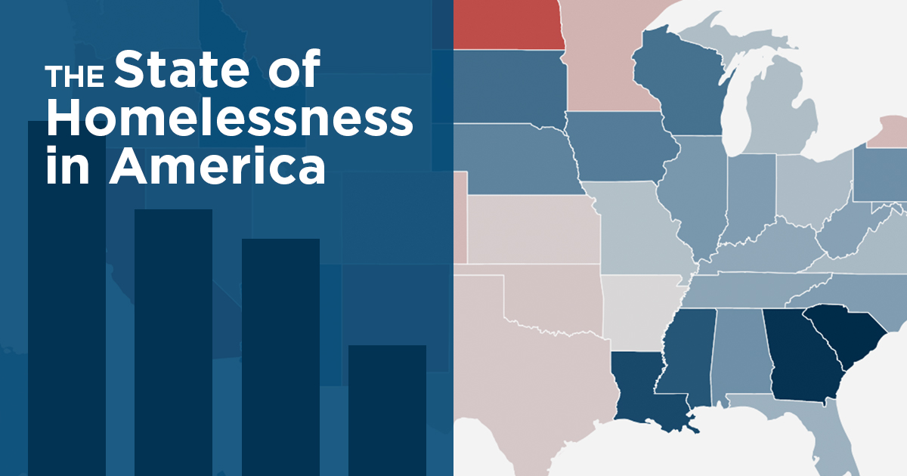
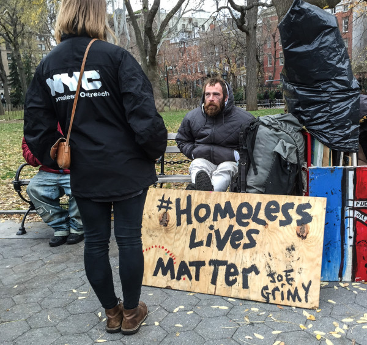
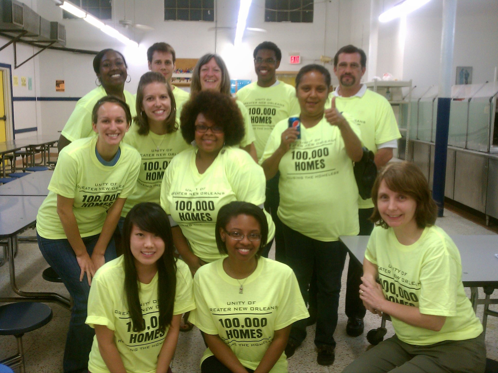
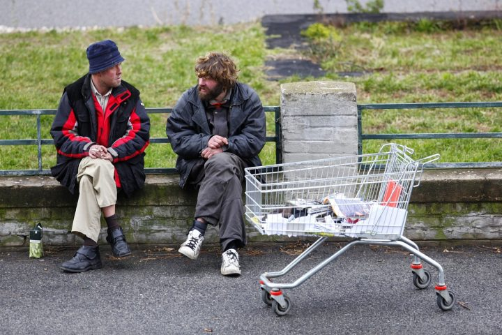
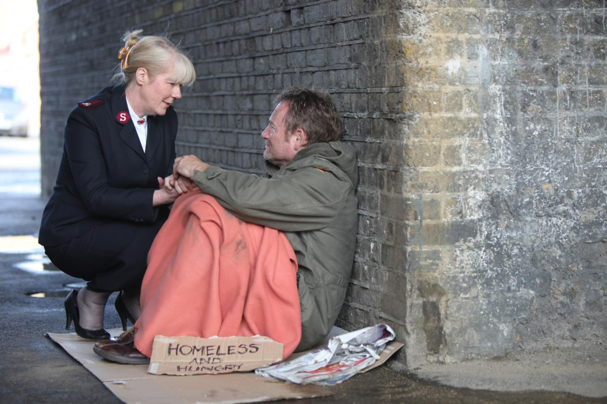

How Many People Go Homeless a Year?
In January 2017 Point-in-Time count, the most recent national estimate of homelessness in the United States, identified 553,742 people experiencing homelessness. This means that approximately 17 people were experiencing homelessness on a given night. This rate was the lowest rate of homelessness calcualted since Point-in-Time data collection began. Through the year 2016 and 2017, the overall percentae of people going homelessness increased by .7 percent. In 2017 Point-in-Time count the vast majority of the homeless population (about 360,867 people) lived in some form of shelter or housing, while approximately 192,875 people lived in stress or abandoned buildings.
Why Should You Help the Homeless?
The definition of homeless is a person without a home, and therefore typically living on the streets. What the definition forgot to add was that when you go homeless your lost without food, clothing, family, shelter, and most importanlty, money. Just think, without money, it would be hard to have the life necessities you need to survive. Helping the homeless will not only help them survive, but will remind you of how fortunate you really are. We go on throughout the day wishing we had things that others have or the newest things that just came out, but what we don't think about is how some people don't even have anything. Helping the homeless helps us renew our hope in humainity by allowing us to see the real world around us. Most people only see homeless people as people who have nothing, but they do. They have a heart that is sometimes kinder and better than people around them who judge them poorly. Helping the homeless gives the homeless person a chance to say "I am going home."If you put yourself in their shoes how would you want to be treated?
   How Can You Help the Homeless?
There are many great ways to help the homeless that aern't difficult and can easily be done! One way you can help the homeless is to first understand how they got there in the first place. With your understanding, it will be easier to communicate with them and have a better understanding of ways to help. Another way you can help the homeless is to treat them like any other person. You can do this by saying "hello" to them or even giving them a smile when you walk or drive by. A common deed that many people do to help the homeless is donate items such as clothing, toys, food, and stuff they don't need anymore. Homeless people need necessities to live, so something as simple as clothes means a lot to them. Volunteering is also a very important way to help the homeless. Volunteering ca be volunteering at a homeless shelter near your house to help out with serving food, washing dishes, getting warm clothes for the homeless, and whatever else helps them out. The one thing homeless people need to buy themselves the necessities they need to live is money. Offer homeless people side jobs such as cleaning around a community, painting, or jobs that don't involve education like answering phones. There are lots of other things to help homeless people in your community that you can do, but it's up to you to be the person who makes the difference for everyone!